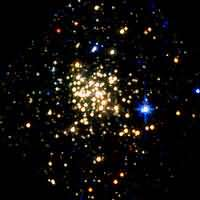
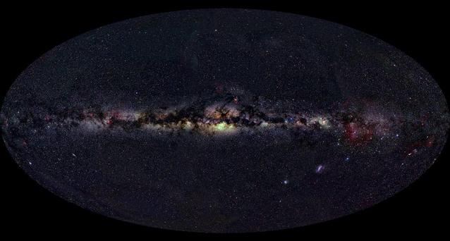
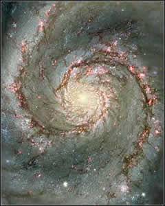

The process of unravelling the formation history of galaxies (also referred to as galactic archaeology) depends largely on the measurement of the ages of stellar populations contained within the galaxies. Since our own galaxy is a spiral, most of our understanding of spiral galaxy formation comes from studies of the stellar populations within the Milky Way.
Although the formation of galaxies is not fully understood, astronomers have identified the three key processes involved:
- primordial collapse: the collapse of individual gas clouds early in the history of the Universe.
- hierarchical clustering: the formation of large galaxies through the merging of many smaller ones.
- secular evolution: formation as a result of internal processes, such as the actions of spiral arms and bars.
The degree to which each of these processes contributes to the formation of any particular galaxy is thought to depend on the galaxy’s Hubble type. In particular, the formation of spiral galaxies is thought to be a complex process in which the stellar halo, bulge and disks are formed at different times and through different mechanisms.
Bulges and Halos

Credit: NASA, ESA and D. Figer (STScI)
The bulge and halo of the Milky Way (and other Sa and Sb galaxies) are composed mostly of old stars. This indicates that the bulges and halos of spiral galaxies probably formed through the primordial collapse of individual gas clouds early in the history of the Universe. While this accounts for the almost exclusively old ages of halo stars, it cannot be the whole story for spiral bulges which also contain young and intermediate age stars. The most reasonable explanation for the presence of these younger stars is that after the spiral bulges of these galaxies had formed through primordial collapse, they also experienced some form of secular evolution – through accretion processes or the actions of spiral arms or a central bar.
While the above scenario appears to account well for the stellar populations found in the bulges of Sa and Sb galaxies, the bulge populations for Sc and Sd galaxies are actually the same as those found in the disks of these galaxies. This would suggest that the bulges of extremely late-type spiral galaxies are formed almost entirely through secular evolution processes.

Credit: A.Mellinger
Disks
The stars in the disks of spiral galaxies are generally younger than the majority of stars found in the bulge and halo. For this reason, disks are thought to form after the primordial collapse event responsible for the formation of the spheroidal bulge and halo, possibly through the cooling of the hot gas contained within the halo of the newly formed galaxy. However, this cannot be the whole picture, as many spiral galaxies possess two distinct disk structures (a thick disk and a thin disk) which vary in content (thick disks are composed entirely of stars while thin disks also contain cold gas) as well as thickness.

Credit: NASA and The Hubble Heritage Team (STScI/AURA)
The formation of thick disks is something of an enigma. In the Milky Way, on average, the thick disk is older than the thin disk but younger than the bulge. It has therefore been suggested that the thick disk may have formed through a significant merger event early in the Galaxy’s history. Both observations and N-body modelling indicate that such an event would disrupt the thin disk and consume a significant fraction of the cold gas in a burst of new star formation, so the proposed merger event must have taken place before the thin disk had time to fully form.
An alternative to this major merger scenario is one in which the thick disk formed relatively slowly through the actions of multiple minor mergers. Once the merger events had formed the thick disk, the stars retained the scale height of the thick disk while the cold gas collapsed back into the galactic plane to form the thin disk. The Milky Way is currently subject to at least two minor mergers (with the Sagittarius and Canis Major dwarf galaxies) so this minor merger scenario may be credible.
Other, non-merger, models (including secular evolution heating processes and various forms of the primordial collapse model) have also been put forward to explain the formation of thick disks. However, these models have difficulty predicting the observed properties of the Milky Way’s thick disk and are not generally favoured.
The final aspect of the formation of spiral galaxies is the on-going star formation evident in their thin disks. This star formation is usually on the leading edge of the spiral arms where the cold gas of the thin disk is compressed, and provides unequivocal evidence for on-going secular evolution in thin disks.